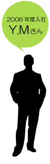
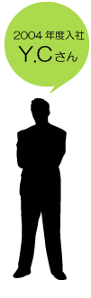

スタッフインタビュー
- 自分で組んだプログラムが動いてくれるのが物凄く嬉しくて、高校の頃プログラムの授業は人一倍目が輝いていました。
それは今でも変わりません。やっぱり思うように動いてくれると嬉しいものです。

- 嫌いと言うか…締切りが近いと残業が増えるのが大変ですね。
体の調子を整えるのが難しい仕事、と言えるかもしれません。
健康が一番です。
- ぶっちゃけると、もっともっと物凄い事やってると思ってました！
自分の知らない次元のそれはもう私が考えも付かないような
プログラムを組んでいるものだろうと考えていたのですが、
やり始めると意外に地味な作業もあったり、
「ああ、これなら私も判る、私にも出来る」と何だか親近感みたいなものが湧きましたね。
入る直前まではいきなり物凄いハイレベルな事をさせられるのでは…、とちょっと不安だったので安心しました。
- 実は現在、初仕事の真っ最中です。
今までは自主学習も兼ねて自社内で使用するソフトとかBBSとか作っていましたが、この仕事はPHPを使用して携帯サイトを動かす、というものです。
社長や他の社員さんからはこんな面白い仕事が初仕事で良かったな、と言われます。
既に動いているサイトの修正みたいなものなので、かなり勉強になっています。
- 初仕事だったのであたふたしていましたが、皆さんに迷惑を掛けないよう資料を見たり、実際に動かしてみたりして自分が開発するものがどんなものなのかを把握するのに必死でした。
関係者の方々と仲良くなることも結構重要ですね。楽しく仕事が出来るかどうかはそれに掛かっていると思います。

- 人頼りにすることに抵抗がある私は、もっぱらインターネット等の情報頼りです…。
ですが時と場合によって先輩たちにご教授をお願いします。
特に時間がない案件の場合は、調べているより聞いた方が早いですので、自分の性格云々よりそちらを優先するように気をつけています。
どちらかと言うと私タイプより、気兼ねなく人に尋ねることが出来る人の方が早く色々覚えられると思いますよ。
- 物事を組み立てるのが好き、とか何かを作ることに喜びを感じる、という事は大事だと思います。私がそうなので。
何かを創作している時は生き甲斐を感じますね。
他にも沢山あるのでしょうが、まだまだ未熟者の私としてはこの２つしか思いつきません。
- 向いていないと思うなら、きっとこの仕事場にいません(笑)
- 一言で言うと環境。特に社長の人柄がこの会社を形作っているといっても過言ではない気がします。実を言うと、私は他の会社も受かっていましたが、社長でこの会社を選んだのです。やはり社長が良いと社員さんも全員良い人たちばかりで、毎日楽しく仕事させてもらっています。ここを選んで良かったと、日々感謝しています。
- ちょっと幼稚なものですが、『星モグラサンジの伝説』という小説があります。
名前の通りモグラが主人公なのですが、このサンジってモグラが大層面白い奴で、豪快＋天然っぷりを発揮しまくるというお話です。
この小説は手放しで笑える上に中々和みますので、読まれたことがない方は一度読んでみては如何でしょう？
小学生の頃、友を巻き込んで皆で大笑いしていた記憶が鮮明に残っています。音読がオススメ！（笑）
- 自分がテストやソースを書いたところを使ってもらえること。
- 急に忙しくなったり、暇になったりと
スケジュールを立てにくいこと。
- プログラムを組むよりもテストの時間が長いこと。
- 予算見積もりのための資料を作成すること。
- 資料確認、人の名前と顔を覚えること。
質問したい時に名前を間違えるのはまずいですから。
- ネットで調べる。それで分からなければ、人に聞く。
切り上げるタイミングを誤るととんでもなく時間がかかってしまいますが。
- 頭の切り替えが早いこと。
- まだまだ修行中なので、分からないですね。
- 良くも悪くも個性的な方が多いこと。
小さい会社ながら、している業務は大きいこと。
- ヴィクトル・ユーゴー 『レ・ミゼラブル』

- 自分がプログラミングした箇所が何の問題もなく動いたときの
達成感がたまりません！
- 締め切りというプレッシャーに耐えながら、
仕事を行うことですね・・・。
- 日付が変わってもやり続ける仕事なんだなと思いました。
- 案件の手書き仕様書をデータ化。
手書き仕様書だった為に読みづらい字が多く、毎回、わからない字が出てきたときは仕様を考えた人に聞きに行ってました。
- 作業予定を立てることですね。
納期があるので遅れないように計画を立てます。
- まずはGoogleで調べます。それでもわからなかった場合は経験豊富な先輩方に質問します。
- 体力・忍耐力
- 向いている・・・・のかな？
- 公私問わずにいろいろな相談にのってくださる社長、先輩方。
とっても明るい職場です。
- 喜多川泰著 『君と会えたから・・・』

- 無から有を産み出せるということ。
- 基本的に精神的肉体労働な点。
- よくあるIT系っておしゃれ～とかいう雰囲気なんてどこ吹く風。
- この業界で一番始めての案件は
Perl/CGIでのメールフォーム。
ツートップでは全く初めてのVBで右往左往。
- プロジェクトに参加している人の性格把握。
- ・ググる。
・知ってそうな周りの人間に相談。
・諦めて他の手段を(略
- 一番はプログラムやPC、コンピュータに関することが
好きなこと。
あとはあんまり悩まないことじゃないかと。
- あんまり、というか毎日悩んだり迷ったり行き詰ったり
してます。
- 社員を大事にしてくれるということ。
大きい会社や出来たばかりのベンチャーで働いてきましたが、一番ありがたいです。
- ベニー松山 『風よ。龍に届いているか』
株式会社 ツートップ
【長崎本社】 〒850-0035長崎県長崎市元船町6-6松尾ビル201 TEL:095-829-2039 FAX:095-829-2245
【東京事業所】 〒100-0005 東京都千代田区丸の内1-8-3丸の内トラストタワー本館２０階 TEL:03-5288-7549
【E-mail】 info@two-top.co.jp
ソフトウェアの設計・開発・提案、ネットワークの構築等を主業務に活動しています。
拠点は東京と長崎にあり、それぞれに自分の役割を認識し、お客様の要求に応えています。
ツートップを支える社員にツートップでの仕事はどんな仕事なのか、生の声を聞いてみました。